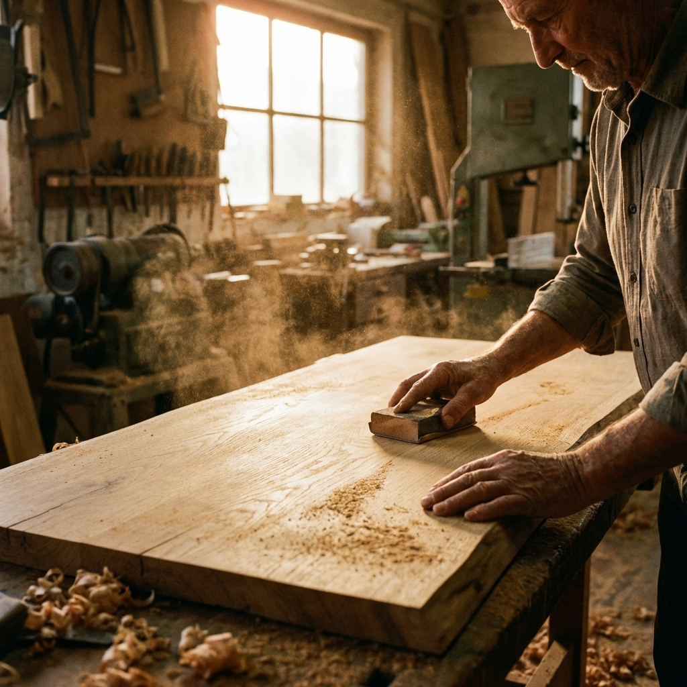
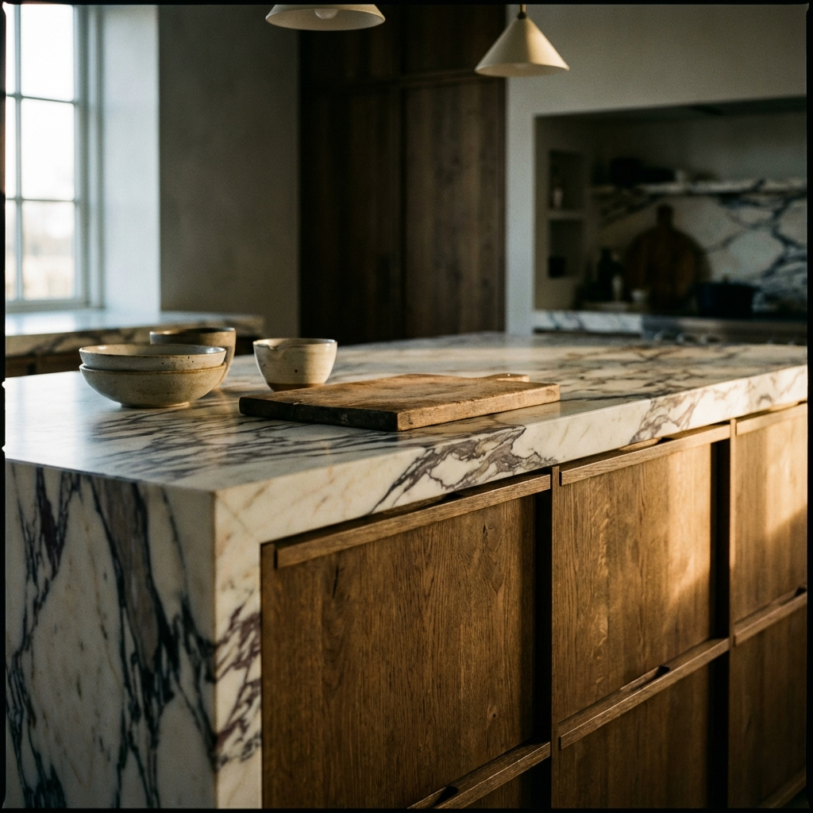
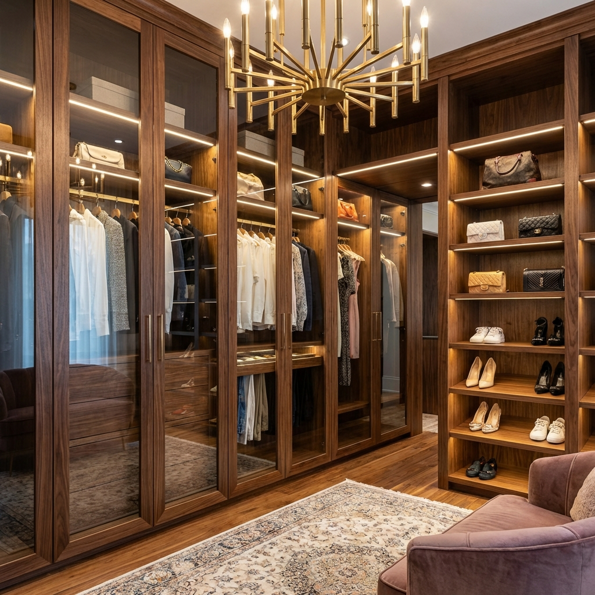
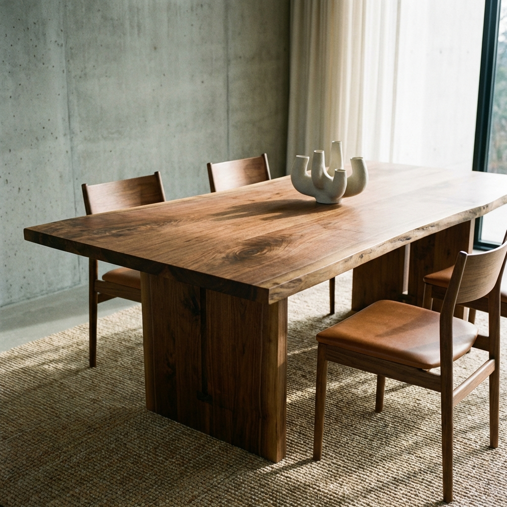
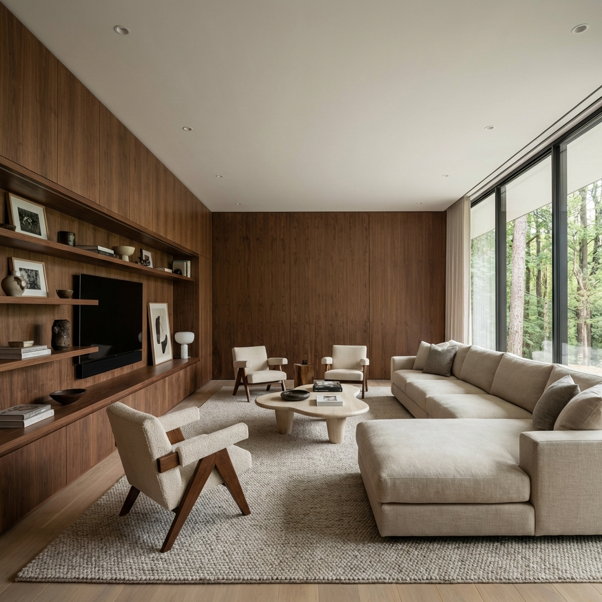

DIZAJNIRANO DA TRAJE
Više od drveta.
Stil života.
Dizajniramo i izrađujemo kuhinje i namještaj koji traju generacijama.
DIZAJNIRANO DA TRAJE
Dizajniramo i izrađujemo kuhinje i namještaj koji traju generacijama.
Gdje se tradicija susreće s modernim dizajnom.
U srcu svakog doma je kuhinja, a u srcu našeg rada je drvo. Bio-Drvo Interijeri nije samo stolarija; mi smo kreatori prostora. S desetljećima iskustva, Robert Del Vechio i njegov tim pretvaraju najplemenitije materijale u bezvremenske komade.
Naš pristup je beskompromisan: koristimo samo vrhunske materijale, od masiva hrasta i oraha do najmodernijih kompozitnih ploča, kako bismo stvorili interijere koji oduzimaju dah.


Funkcionalnost i estetika u savršenom skladu. Od modernog minimalizma do rustikalnog šarma.

Maksimalna iskoristivost prostora uz elegantan dizajn. Walk-in ormari o kojima ste sanjali.

Stolovi, komode i vitrine izrađeni točno prema vašim željama i dimenzijama.

Kompletna rješenja za vaš dom ili poslovni prostor. Ključ u ruke.
"Profesionalnost i kvaliteta na najvišoj razini. Moja nova kuhinja je san snova. Svaki detalj je savršeno izveden."
"Robert i njegov tim su nam napravili kompletan namještaj za dnevni boravak. Preporuka svima koji traže vrhunski dizajn i kvalitetu!"
"Walk-in ormar je savršen. Funkcionalnost je maksimalna, a izgled je baš onakav kakav sam zamišljala. Hvala Bio-Drvo!"
Spremni za vaš projekt iz snova? Javite nam se.
Bio-Drvo Interijeri
Vukovarska ul. 123, Zagreb
Email: info@biodrvo.hr
Tel: +385 1 234 5678